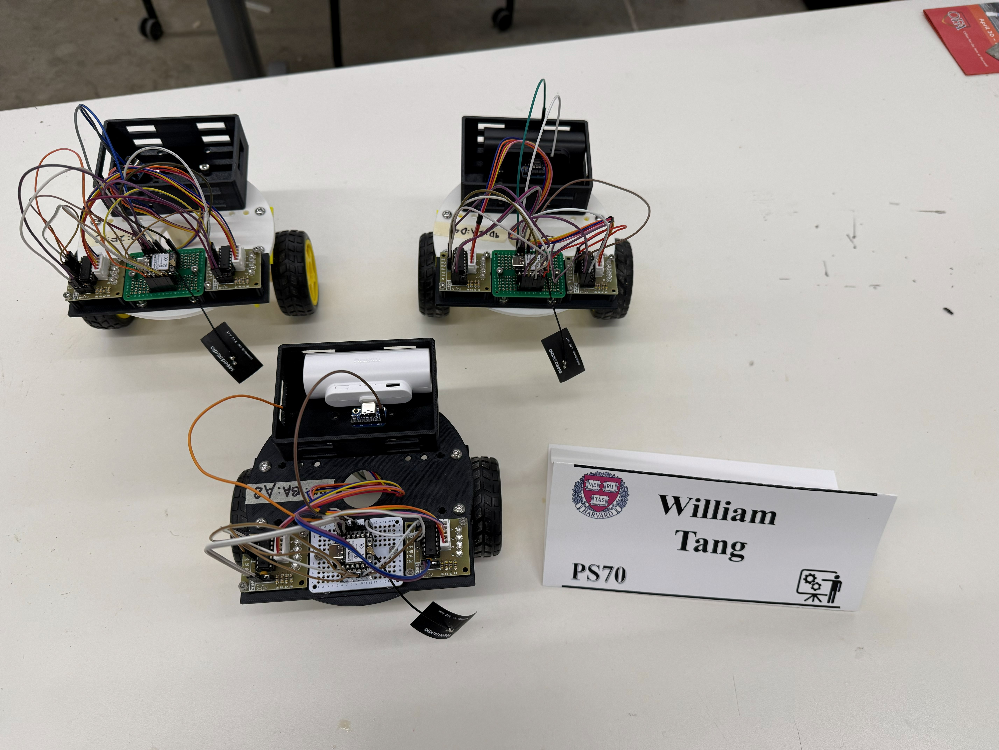
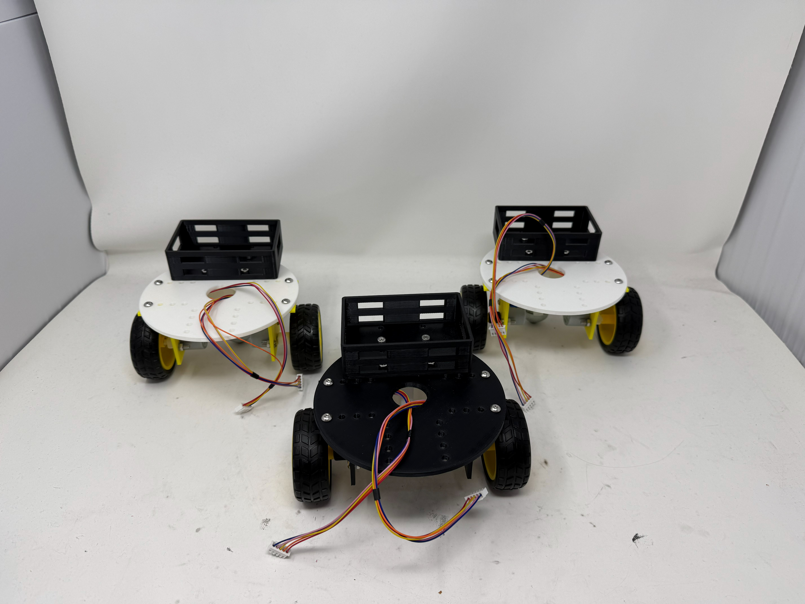
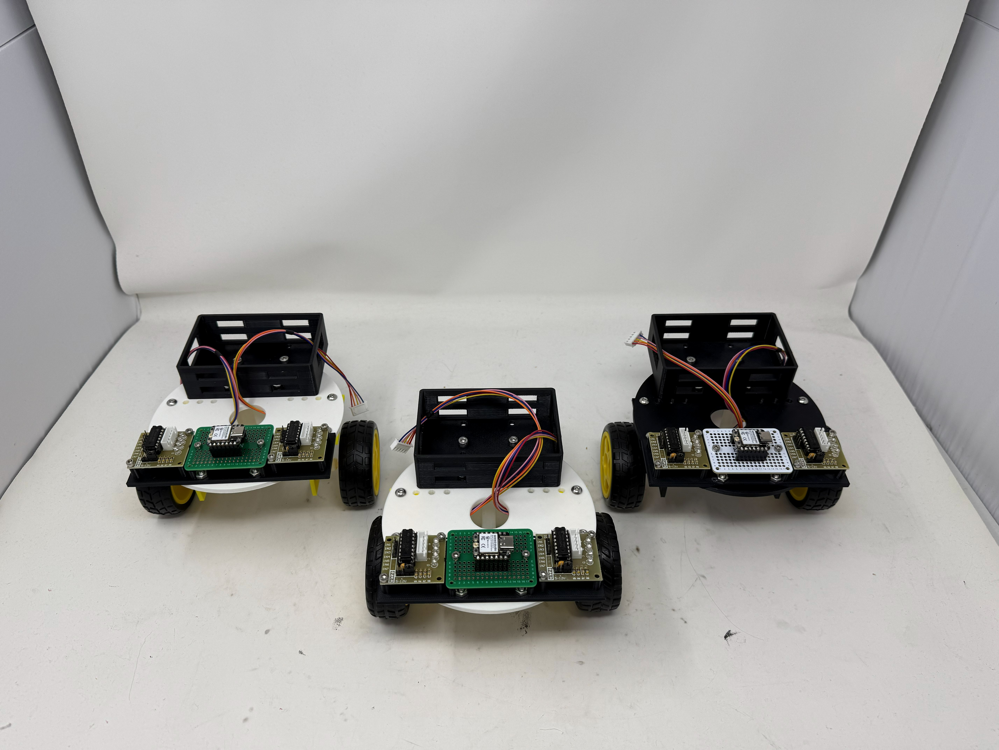
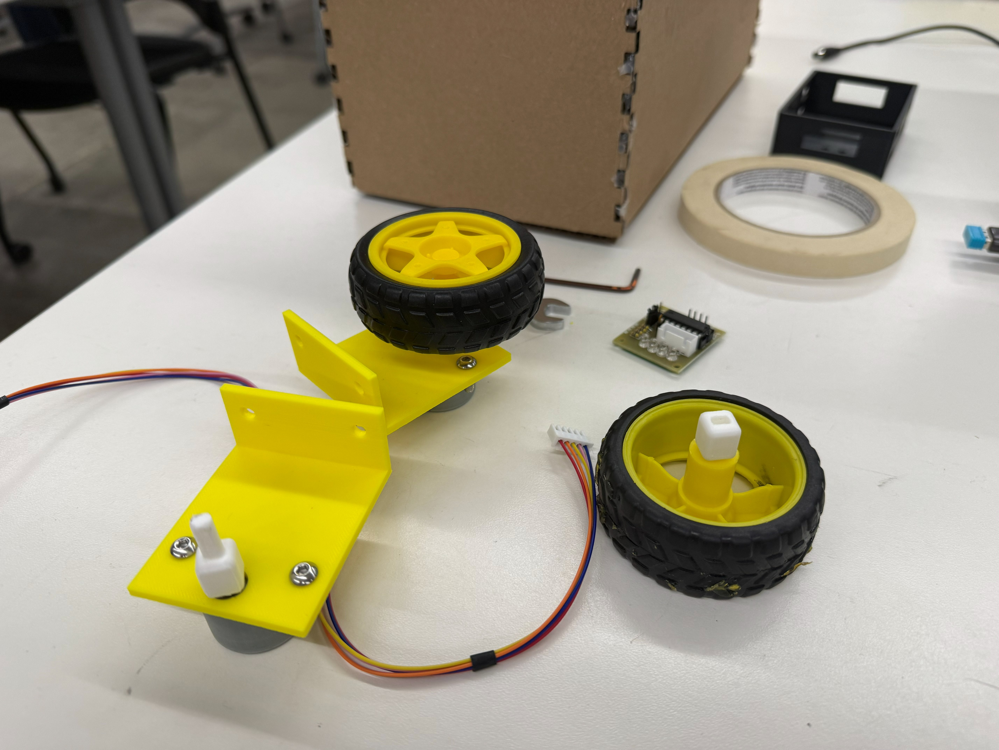
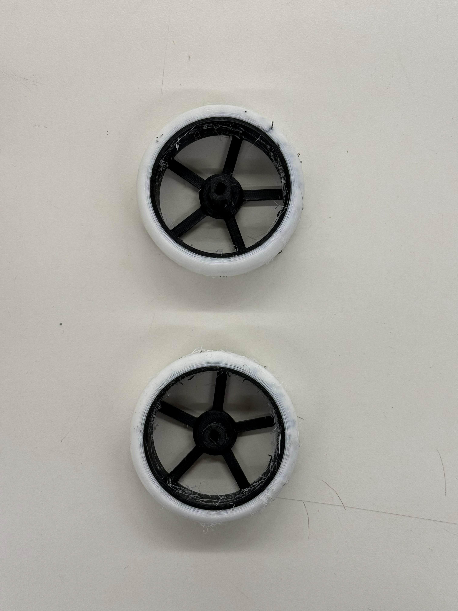
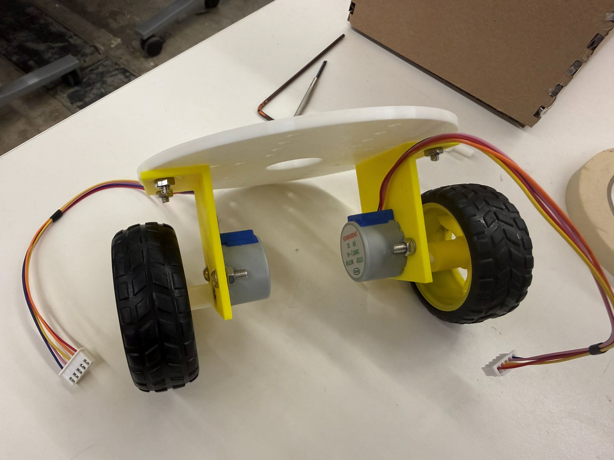
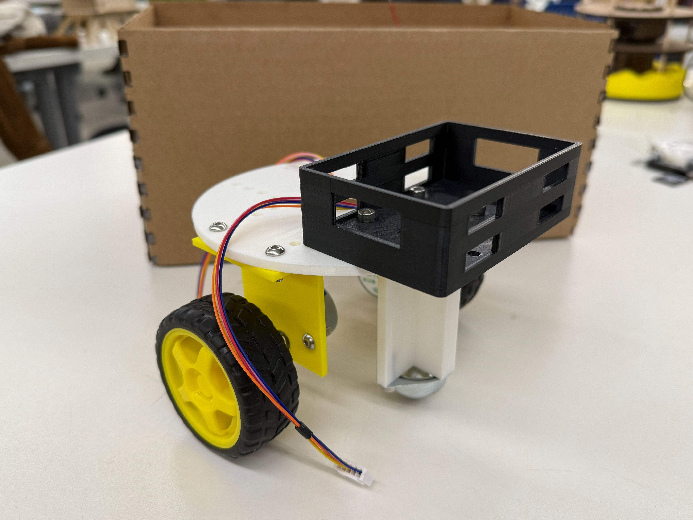

<div class="textcontainer">
<br></br>
<h3>Final Project: 3-Robot RSSI Triangle Chase</h3>
<p class = "margin"></p>
Three identical hand-sized robots. Each one chases exactly one of the others over radio signal strength alone — Robot A chases B, B chases C, C chases A. No cameras, no SLAM, no overhead tracking. Each robot just listens for its target's ESP-NOW beacon, reads the per-packet RSSI, and uses gradient ascent through motion to steer toward the strongest signal. Drop all three on the floor, power them on, and a cyclic chase emerges with no central coordinator.
<p class = "margin"></p>
This was the destination the whole semester was pointing at. <a href="../04_microcontroller/index.html">Week 4</a> proved the radio + RSSI + motor switching loop on the bench. <a href="../07_outputs/index.html">Week 7</a> proved a XIAO could drive a real mobile platform. <a href="../09_networking/index.html">Week 9</a> turned the loop into actual chase behavior on two robots. The final project is the same idea scaled to three robots, on custom-designed and printed hardware, running one shared sketch.
<p class = "margin"></p>
<h4>The demo</h4>
<p class = "margin"></p>
<iframe width="560" height="315" src="https://www.youtube.com/embed/B0T8-ydcpcA" title="3-robot RSSI triangle chase — PS70 final project demo" frameborder="0" allow="accelerometer; autoplay; clipboard-write; encrypted-media; gyroscope; picture-in-picture; web-share" allowfullscreen></iframe>
<p class = "margin"></p>
Three robots on the floor. Each one is broadcasting its own ESP-NOW beacon at 5 Hz <i>and</i> listening for a specific other robot's MAC. When it hears its target, it samples the RSSI, smooths it, and uses the delta to decide whether to drive straight or curve. What you're watching is fully autonomous — no driving, no remote, no laptop in the loop. Just three radios reacting to each other.
<p class = "margin"></p>
<p></p>
<p class = "margin"></p>
<h4>The concept: rock-paper-scissors pursuit</h4>
<p class = "margin"></p>
The interesting thing about a 3-robot cyclic chase (vs. 2 robots where one chases and one runs) is that nobody is the leader and nobody is the loser. A is chasing B, but A is being chased by C — so A doesn't get to just commit to its target, it's also a moving target for somebody else. The result is a closed pursuit loop with no terminal state. Empirically, this manifests as the robots circling, spiraling, and occasionally clustering then re-separating — the kind of pattern you'd get from a swarm rule, not from any explicit "go to a formation" command.
<p class = "margin"></p>
Critically, none of the robots know they're in a triangle. The triangle is an emergent property of the three independent gradient-ascent loops happening to be wired to each other in a cycle. If I added a fourth robot D chasing A, and re-pointed C to chase D, you'd get a 4-cycle with no code changes to the core behavior — just the per-robot `TARGET_MAC` constant.
<p class = "margin"></p>
<h4>Hardware: three identical robots</h4>
<p class = "margin"></p>
I deliberately made all three robots mechanically and electrically identical. Same chassis, same motors, same drivers, same wiring, same battery pack. The only thing that distinguishes them is the constant block at the top of their firmware (covered below). This was a course-of-the-semester pivot — earlier I'd tried building a heterogeneous predator/prey pair (a fast NEMA 17 + A4988 robot to flee from a slower one), but matching speeds and behaviors across two different builds added more variables than it added value. Symmetric is better: it makes the radio-only behavior the variable.
<p class = "margin"></p>
<p></p>
<p class = "margin"></p>
<h5>Microcontroller and radio</h5>
<p class = "margin"></p>
Each robot carries a <b>Seeed XIAO ESP32-C3</b> on a small protoboard tucked into a custom microcontroller holder, with a <b>Seeed 2.4G A-01 whip antenna</b> on the u.FL connector. The external antenna gives noticeably stronger and more stable RSSI than the onboard PCB antenna, which matters because RSSI <i>is</i> the sensor in this project.
<p class = "margin"></p>
<p></p>
<p class = "margin"></p>
<h5>Motors and drive</h5>
<p class = "margin"></p>
Each robot has <b>2× 28BYJ-48 unipolar steppers</b> driven by <b>ULN2003 carrier boards</b>. The 28BYJ-48 has a 1:63.68 internal gearbox, so output shaft speed is around 12 RPM — slow, but with the gearbox you get strong, repeatable torque from a 5 V supply with no current limiting and no driver tuning. Both motors share a single 5 V rail with the XIAO logic; no separate VMOT, no Vref calibration. That's the whole point of switching from NEMA 17 + A4988 to 28BYJ-48 + ULN2003 — the bipolar setup demanded a separate motor supply, current limit calibration, and per-driver fiddling. Unipolar is "plug it in and it spins."
<p class = "margin"></p>
<p></p>
<p class = "margin"></p>
<h5>Custom 3D-printed parts</h5>
<p class = "margin"></p>
The whole chassis is parts I designed and printed for this project, not a kit:
<ul>
<li><b>Robot chassis</b> — the main deck that everything mounts to.</li>
<li><b>Unipolar motor mounts</b> — bracket the 28BYJ-48 stepper bodies to the chassis at the right ride height.</li>
<li><b>Stepper wheels + extenders</b> — printed wheels that fit directly onto the 28BYJ-48 D-shaft, plus extenders to space them out to the right track width.</li>
<li><b>Microcontroller holder</b> — keeps the XIAO + protoboard mounted and the antenna oriented up.</li>
<li><b>Battery holder</b> — bracket for the 5 V pack so the robots can run untethered.</li>
<li><b>Ball bearing structure</b> — front caster that supports the un-driven end (differential drive has 2 motorized wheels; the third contact point is just a smooth glider).</li>
</ul>
<p class = "margin"></p>
<p></p>
<p class = "margin"></p>
<p></p>
<p class = "margin"></p>
<p></p>
<p class = "margin"></p>
<h4>Software: one sketch, three configs</h4>
<p class = "margin"></p>
All three robots run the same sketch architecture — the only differences across <code>mvp_robotA.ino</code>, <code>mvp_robotB.ino</code>, and <code>mvp_robotC.ino</code> are two constants at the top of the file. Everything else (the motor primitives, the RSSI smoothing, the decision loop, the watchdog, the beacon broadcast) is byte-for-byte identical.
<p class = "margin"></p>
<h5>RSSI gradient ascent</h5>
<p class = "margin"></p>
A single RSSI value tells the robot how <i>far</i> from its target it currently is, not which <i>direction</i> the target is in. So the chase trick is to recover heading information by sampling the gradient through motion:
<ol>
<li>Drive somewhere (anywhere) for a second.</li>
<li>Check: did the average RSSI go up or down?</li>
<li>Up → keep going.</li>
<li>Down → try a different direction.</li>
</ol>
<p class = "margin"></p>
This is gradient ascent on a scalar field that has no direction information, only magnitude. The robot recovers a heading by walking the gradient.
<p class = "margin"></p>
<h5>Smoothing</h5>
<p class = "margin"></p>
Per-packet RSSI is noisy — multipath, antenna orientation, and people walking nearby can swing it 10+ dB even when the robot is stationary. Each robot keeps a 10-sample rolling window:
<p class = "margin"></p>
```cpp
const int AVG_WINDOW = 10;
int rssiBuf[AVG_WINDOW];
int rssiIdx = 0;
bool rssiFilled = false;
float currentAvgRSSI() {
int n = rssiFilled ? AVG_WINDOW : rssiIdx;
if (n == 0) return -100.0f;
long s = 0;
for (int i = 0; i < n; i++) s += rssiBuf[i];
return (float)s / n;
}
```
<p class = "margin"></p>
At 5 Hz beacons, 10 samples is a 2-second sliding average — enough to wash out fast jitter without making the chase feel laggy.
<p class = "margin"></p>
<h5>The decision loop</h5>
<p class = "margin"></p>
Once per second, the robot looks at the current smoothed RSSI and compares it to what it was at the previous decision:
<ul>
<li><b>RSSI improved</b> (delta &gt; −2 dBm — a small tolerance to handle slow-moving targets): commit to STRAIGHT.</li>
<li><b>RSSI worsened, currently going STRAIGHT</b>: start curving in whichever direction worked last time (<code>lastGoodCurve</code>).</li>
<li><b>RSSI worsened, currently curving</b>: commit to this curve for a few more cycles before giving up. A single bad-cycle alternation can't actually accomplish a U-turn — you need to let one curve direction run long enough to change the heading meaningfully before deciding it's wrong.</li>
<li><b>3 consecutive bad cycles in the same curve</b>: flip to the opposite curve.</li>
</ul>
<p class = "margin"></p>
Here is the decision block from the main loop, verbatim:
<p class = "margin"></p>
```cpp
float delta = avg - lastDecisionRSSI;
DriveMode nextMode = driveMode;
if (delta > RSSI_IMPROVE_THRESHOLD) {
if (driveMode != STRAIGHT_MODE) lastGoodCurve = driveMode;
consecutiveBadInCurve = 0;
nextMode = STRAIGHT_MODE;
} else if (driveMode == STRAIGHT_MODE) {
nextMode = lastGoodCurve;
consecutiveBadInCurve = 1;
} else {
consecutiveBadInCurve++;
if (consecutiveBadInCurve >= FLIP_THRESHOLD) {
nextMode = (driveMode == CURVE_LEFT_MODE)
? CURVE_RIGHT_MODE
: CURVE_LEFT_MODE;
consecutiveBadInCurve = 1;
}
}
```
<p class = "margin"></p>
<h5>Continuous motion, non-blocking steps</h5>
<p class = "margin"></p>
The robot is always moving. It never stops to think. When it decides a curve direction is wrong, it smoothly switches to a different curve while still rolling forward — the inner wheel just slows by a divisor of 4× instead of stopping. Visually this reads as gentle weaving while homing in, rather than the choppy "drive, stop, turn, drive" of a discrete-step controller.
<p class = "margin"></p>
The way that works without dropping radio packets is a non-blocking step-pulse generator. Each motor has its own period (<code>FAST_PERIOD_US</code> or <code>SLOW_PERIOD_US</code>). Every loop iteration, <code>motorsTick()</code> checks whether each motor is due for its next pulse:
<p class = "margin"></p>
```cpp
void motorsTick() {
if (!motorsRunning) return;
unsigned long now = micros();
if (leftStepDir != 0 && now - lastLeftStepMicros >= leftStepPeriodUs) {
leftStepIdx = (leftStepIdx + leftStepDir + SEQ_LEN) % SEQ_LEN;
writePins(LEFT_IN, leftStepIdx);
lastLeftStepMicros = now;
}
if (rightStepDir != 0 && now - lastRightStepMicros >= rightStepPeriodUs) {
rightStepIdx = (rightStepIdx + rightStepDir + SEQ_LEN) % SEQ_LEN;
writePins(RIGHT_IN, rightStepIdx);
lastRightStepMicros = now;
}
}
```
<p class = "margin"></p>
The two motors run from independent timers, so one can be at full speed while the other coasts at quarter speed — that's where the smooth curve comes from. ESP-NOW packets continue to arrive on the receive callback during all of this; nothing in the motor loop blocks.
<p class = "margin"></p>
<h5>Broadcast, not point-to-point</h5>
<p class = "margin"></p>
Every robot sends its beacon to the broadcast address (<code>FF:FF:FF:FF:FF:FF</code>) rather than to a specific peer MAC. That means:
<ul>
<li>Adding a robot doesn't require updating every other robot's peer list.</li>
<li>Every robot hears every beacon, so each has full visibility into all the others on the same WiFi channel.</li>
<li>The "who do I chase" decision happens <i>on the receive side</i> by filtering on <code>info-&gt;src_addr == TARGET_MAC</code>. That filter is what turns "I hear everyone" into "I chase only my specific target."</li>
</ul>
<p class = "margin"></p>
```cpp
void onReceive(const esp_now_recv_info *info, const uint8_t *data, int len) {
if (len != sizeof(incomingMsg)) return;
if (memcmp(info->src_addr, TARGET_MAC, 6) != 0) return; // ← the filter
memcpy(&incomingMsg, data, sizeof(incomingMsg));
lastPacketMillis = millis();
int rssi = info->rx_ctrl->rssi;
rssiBuf[rssiIdx++] = rssi;
if (rssiIdx >= AVG_WINDOW) { rssiIdx = 0; rssiFilled = true; }
}
```
<p class = "margin"></p>
This is what makes the architecture scale cleanly to N robots without rewiring the messaging layer.
<p class = "margin"></p>
<h5>Symmetry breaking</h5>
<p class = "margin"></p>
If all three robots happened to start curving in the same direction at the same time, they'd rotate outward in unison and the triangle would collapse to no chase at all. The fix is one constant per robot — <code>INITIAL_CURVE</code> alternating L / R / L around the triangle — so each robot's <code>lastGoodCurve</code> seed is different from its neighbors':
<ul>
<li>Robot A: <code>CURVE_LEFT_MODE</code></li>
<li>Robot B: <code>CURVE_RIGHT_MODE</code></li>
<li>Robot C: <code>CURVE_LEFT_MODE</code></li>
</ul>
<p class = "margin"></p>
Pure alternation around an odd cycle isn't perfect (C and A are both LEFT), but it's enough to break the simultaneous-symmetric-rotation failure mode in practice. The robots desynchronize within a few decision cycles and the chase takes over.
<p class = "margin"></p>
<h5>Watchdog: lose signal, stop driving</h5>
<p class = "margin"></p>
If no target packet arrives for 1 second (target died, target rebooted, target moved out of range), the robot stops driving and goes back to IDLE rather than running blind on stale RSSI:
<p class = "margin"></p>
```cpp
if (millis() - lastPacketMillis > PACKET_TIMEOUT_MS) {
if (phase != IDLE) {
Serial.println("Watchdog: signal lost, IDLE");
enterIDLE();
}
return;
}
```
<p class = "margin"></p>
As soon as a packet comes back in and the smoothed RSSI is above <code>RSSI_LOST</code> (−85 dBm), the robot transitions out of IDLE on its own.
<p class = "margin"></p>
<h4>Per-robot config — the only thing that differs</h4>
<p class = "margin"></p>
The entire difference between <code>mvp_robotA.ino</code>, <code>mvp_robotB.ino</code>, and <code>mvp_robotC.ino</code> is this constant block at the top:
<p class = "margin"></p>
```cpp
// Robot A (MAC 58:8C:81:A0:2F:1C) chases B:
uint8_t TARGET_MAC[6] = {0x58, 0x8C, 0x81, 0x9F, 0xBA, 0xA8};
DriveMode INITIAL_CURVE = CURVE_LEFT_MODE;
// Robot B (MAC 58:8C:81:9F:BA:A8) chases C:
uint8_t TARGET_MAC[6] = {0x58, 0x8C, 0x81, 0x9D, 0x2A, 0xD4};
DriveMode INITIAL_CURVE = CURVE_RIGHT_MODE;
// Robot C (MAC 58:8C:81:9D:2A:D4) chases A:
uint8_t TARGET_MAC[6] = {0x58, 0x8C, 0x81, 0xA0, 0x2F, 0x1C};
DriveMode INITIAL_CURVE = CURVE_LEFT_MODE;
```
<p class = "margin"></p>
To add a 4th robot D to the cycle (A→B→C→D→A): print another chassis, flash a 4th sketch with D's TARGET_MAC pointing to A, change A's TARGET_MAC to point to D, alternate INITIAL_CURVE. No other code changes anywhere.
<p class = "margin"></p>
<h4>Source files</h4>
<p class = "margin"></p>
<a href="mvp_robotA.ino" download>mvp_robotA.ino</a> &nbsp;|&nbsp;
<a href="mvp_robotB.ino" download>mvp_robotB.ino</a> &nbsp;|&nbsp;
<a href="mvp_robotC.ino" download>mvp_robotC.ino</a>
<p class = "margin"></p>
<h4>How each week's work landed in the final</h4>
<p class = "margin"></p>
The final project isn't a thing I built in one week — it's the integration of pieces built across the semester. Concretely:
<ul>
<li><b><a href="../04_microcontroller/index.html">Week 4 — Microcontroller</a></b>: two XIAOs talking over ESP-NOW, RSSI smoothed with a 10-sample window, hysteresis-based motor on/off, packet-timeout watchdog. The smoothing + watchdog code survives essentially unchanged.</li>
<li><b><a href="../07_outputs/index.html">Week 7 — Electronic Outputs</a></b>: first time a XIAO drove a real differential-drive mobile platform (borrowed for the MVP). Proved the motor-control half of the loop on actual rolling hardware.</li>
<li><b><a href="../09_networking/index.html">Week 9 — Networking</a></b>: the gradient-ascent decision loop, the non-blocking step generator, the broadcast-plus-filter messaging architecture, the symmetry-breaking <code>INITIAL_CURVE</code> idea. Demoed on two robots; everything generalizes.</li>
<li><b>3D design / fabrication weeks</b>: the chassis, wheels, mount, and battery holder are all parts I designed and printed across the 3D-printing and CAD weeks. The final robots are the third design pass on the chassis after the first version was too tall (high center of gravity, tippy) and the second was too cramped to mount the antenna upright.</li>
</ul>
<p class = "margin"></p>
<h4>What I'd do next</h4>
<p class = "margin"></p>
A few things I deliberately didn't do but would be the natural next steps:
<ul>
<li><b>Onboard battery management</b>: right now the 5 V pack just runs everything until it sags. A small monitor on the battery rail + a serial warning would let the robot land gracefully instead of behaving erratically as voltage drops.</li>
<li><b>Recovery behavior when signal is lost</b>: currently the watchdog just stops the robot. A smarter version would spin in place to search for the target before giving up.</li>
<li><b>Per-robot RSSI calibration</b>: each XIAO + antenna combination has a slightly different RSSI baseline. The threshold constants are tuned for one robot and "close enough" for the others; a calibration pass would tighten chase behavior.</li>
<li><b>Bigger swarm</b>: the architecture scales to N robots with no code changes beyond per-robot constants. Genuinely interesting behaviors (waves, mutual avoidance, leader emergence) probably start at N=6 or so.</li>
</ul>
<p class = "margin"></p>
</div>